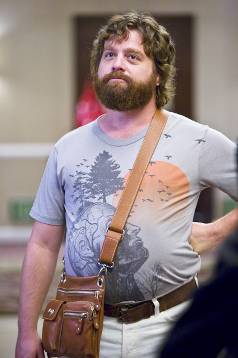

HomeAboutEarly lifeCareerMaintream PerformancesFilmographyTelevison & Webseries Music Videos

Galifianakis played Alan Garner in the hit comedy The Hangover and earned
the MTV Movie Award for the Best Comedic Performance.[22] He was also prominently
advertised in subsequent films that featured him in supporting roles, such as G-Force,
Youth in Revolt and the Oscar-nominated film Up in the Air.
Galifianakis also starred in the HBO series Bored to Death and hosted Saturday Night
Live on March 6, 2010 during the show's 35th season, during which he shaved his beard
mid-show for a sketch, and then closed the show wearing a fake beard.[23] He hosted again
on March 12, 2011 and shaved his head this time, in a Mr. T-like hairstyle, which was
allegedly supposed to be used for a sketch that never aired due to time constraints.[24]
In 2010, he starred in several films, including Dinner for Schmucks, It's Kind of a Funny
Story and Due Date.[25] On October 29, 2010, while debating marijuana legalization on the
show HBO's Real Time with Bill Maher, Galifianakis appeared to have smoked marijuana on
live television;[26] host Bill Maher denied that it was real marijuana in an interview with
Wolf Blitzer during an episode of The Situation Room. In 2011, he returned as Alan Garner
in the sequel, The Hangover Part II, which was set in Thailand[27] and voiced Humpty Dumpty
in Puss in Boots. Galifianakis starred alongside Will Ferrell in Jay Roach's 2012 political
comedy The Campaign.[28] He received critical praise for his performance in the 2014 film
Birdman, in which he starred with Michael Keaton, Emma Stone and Edward Norton.
In January 2014, it was announced that Galifianakis and Louis C.K. were developing a
comedy pilot for FX.[29] In August 2015, Galifianakis is in final negotiations to play
The Joker in Lego Batman.